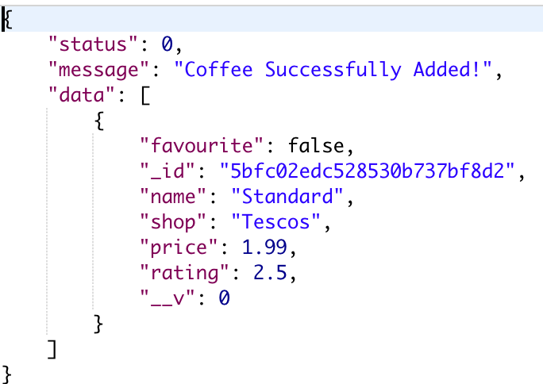
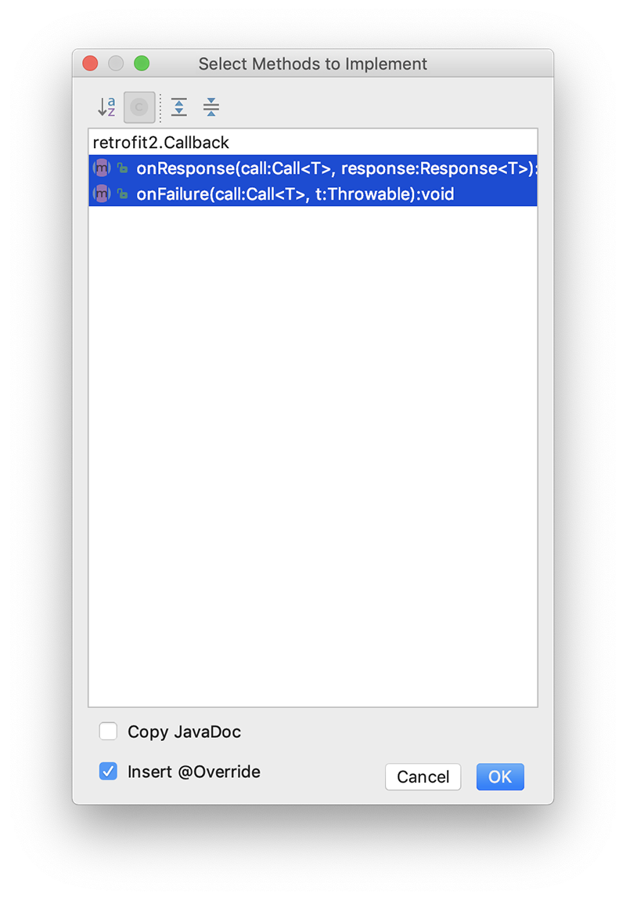

This lab continues our Case Study CoffeeMate with the introduction of a RETROFIT API to interact with a Node Web Server.
This is the CoffeeMate Android app as we left it with the Volley lab : CoffeeMate.6a.0.
If you have completed that lab, then you can use your own project. If not, use the above archive.
First we need to add a few dependencies so open your app/build.gradle and include the following
implementation 'com.squareup.retrofit2:retrofit:2.3.0'
implementation 'com.squareup.retrofit2:converter-gson:2.3.0'Open your androidManifext.xml file - and confirm/insert this new permission entry:
<uses-permission android:name="android.permission.INTERNET"/>This should be entered before the <application> element as shown here:
<manifest...
<uses-permission android:name="android.permission.INTERNET"/>
<application
....
....
....
</manifest>and make sure to 'Sync' your project.
NOTE : If you get a Clear Text Traffic Error you'll need to add
android:usesCleartextTraffic="true"to your application tag, in your manifest file.
Next, In the api package, add the following class to represent the JSON response
public class CoffeeWrapper {
public int status;
public String message;
public List<Coffee> data;
}Here's what our json looks like from the server.

and then introduce this CoffeeService interface, and fix any import errors
public interface CoffeeService
{
@GET("/coffees")
Call<CoffeeWrapper> getAll();
@GET("/coffees/{id}")
Call<CoffeeWrapper> get(@Path("id") String id);
@DELETE("/coffees/{id}")
Call<CoffeeWrapper> delete(@Path("id") String id);
@POST("/coffees")
Call<CoffeeWrapper> post(@Body Coffee coffee);
@PUT("/coffees/{id}")
Call<CoffeeWrapper> put(@Path("id") String id,
@Body Coffee coffee);
}This class will server as a local interface for interacting with the remote service (deployed to heroku).
Next, in your CoffeeMateApp add
public CoffeeService coffeeService;
public String serviceURL = "http://coffeemate-nodeserver.herokuapp.com";and in your onCreate() add
Gson gson = new GsonBuilder().create();
OkHttpClient okHttpClient = new OkHttpClient.Builder()
.connectTimeout(30, TimeUnit.SECONDS)
.writeTimeout(30, TimeUnit.SECONDS)
.readTimeout(30, TimeUnit.SECONDS)
.build();
Retrofit retrofit = new Retrofit.Builder()
.baseUrl(serviceURL)
.addConverterFactory(GsonConverterFactory.create(gson))
.client(okHttpClient)
.build();
coffeeService = retrofit.create(CoffeeService.class);Make your CoffeeFragment implement the following interface
Callback<CoffeeWrapper>
add
public Call<CoffeeWrapper> callRetrieve;and
public void getAllCoffees() {
callRetrieve = app.coffeeService.getAll();
callRetrieve.enqueue(this);
}and finally, add the above call to your onResume(), replacing your Volley APi call.
For completeness, add the following to your Base class
public void showLoader(String message) {
if (!loader.isShowing()) {
if(message != null)loader.setTitle(message);
loader.show();
}
}
public void hideLoader() {
if (loader.isShowing())
loader.dismiss();
}and then DELETE (yes, Delete) both your CoffeeApi and VolleyListener classes.
Don't forget to remove/comment out any other Volley references (we'll be refactoring the app as we go), fix any errors and run your app to confirm you can still download/Get all the coffees on the server (along with your favourites).
For Reference, your onResume() should look like this
public void onResume() {
super.onResume();
getAllCoffees();
updateView();
}At this stage, we've made a simple GET request on the Server - now let's make some POST Requests using Retrofit and add a coffee to the list maintained on the server.
First, ensure your AddFragment implements the necessary interface
Callback<CoffeeWrapper>and add the following to your list of variables
public Call<CoffeeWrapper> callCreate;Now, using something like
callCreate = app.coffeeService.post(c);
callCreate.enqueue(this);see can you successfully implement the 'Add' feature, but using RETROFIT.
Updating a coffee isn't as simple and straightforward as the last step, in that we need to
display the coffee details (that the user has selected) on the Edit Screen via a GET request
send a PUT request to update our coffee on the server
return the user to the screen they were on before they chose to edit their coffee (NOT the Home Screen as with the 'Add' option)
You might think the first thing to do is have our EditFragment implement the necessary interface (as we have done previously) with
Callback<CoffeeWrapper>but we need to make multiple different calls (GETs & PUTs) in the one EditFragment, so simply implementing the interface won't meet our needs in this instance.
We need to create Anonymous Retrofit calls and run them at the required times, so first, add the following to your declarations
public Call<CoffeeWrapper> callGet, callUpdate;Next, replace, and complete your onCreate() with the following
@Override
public void onCreate(Bundle savedInstanceState) {
super.onCreate(savedInstanceState);
app = (CoffeeMateApp) getActivity().getApplication();
if (getArguments() != null) {
callGet = app.coffeeService.get(getArguments().getString("coffeeId"));
callGet.enqueue(new Callback<CoffeeWrapper>() {
@Override
public void onResponse(Call<CoffeeWrapper> call, Response<CoffeeWrapper> response) {
// Get the body of the response
// assign it to the local Coffee variable 'aCoffee'
// update your UI to display the coffee details to edit
}
@Override
public void onFailure(Call<CoffeeWrapper> call, Throwable t) {
}
});
}
}Once you can see the coffee details, the last thing to do is update the coffee on the server and return the user back to the screen there were previously on.
You'll need to do something like this
callUpdate = app.coffeeService.put(aCoffee._id,aCoffee);
callUpdate.enqueue(new Callback<CoffeeWrapper>() . . .);so without referring to the lecture material (not too much anyway) have a go at completing this step.
This step isn't as simple as the equivalent step in the VOLLEY lab as we need to create another Anonymous call for deleting, as our CoffeeFragment already implements our interface - but we'll try and make it as simple as we can :)
First, add the following to your declarations
public Call<CoffeeWrapper> callDelete;Next, add, and complete the following method (there's very little to do here)
public void deleteCoffee(String id) {
callDelete = app.coffeeService.delete(id);
callDelete.enqueue(new Callback<CoffeeWrapper>() {
@Override
public void onResponse(Call<CoffeeWrapper> call, Response<CoffeeWrapper> response) {
}
@Override
public void onFailure(Call<CoffeeWrapper> call, Throwable t) {
}
});
}You then need to call the above method wherever you were making your VOLLEY 'delete' requests.
To get you started, you'll need this in your deleteCoffees() method
deleteCoffee(listAdapter.getItem(i)._id);and this in your onCoffeeDelete()
deleteCoffee(coffee._id);If you notice your list isn't updating after you delete 1 or more coffees make sure you're calling
getAllCoffees()after you delete, to get the latest version of your list.
This is the solution which uses a Web Service and Retrofit to manage the Coffees in the app: